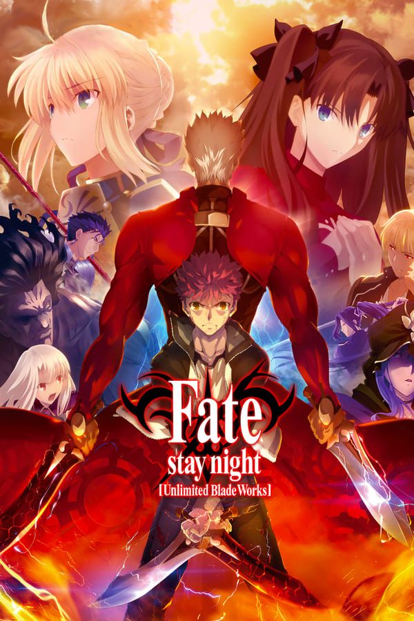
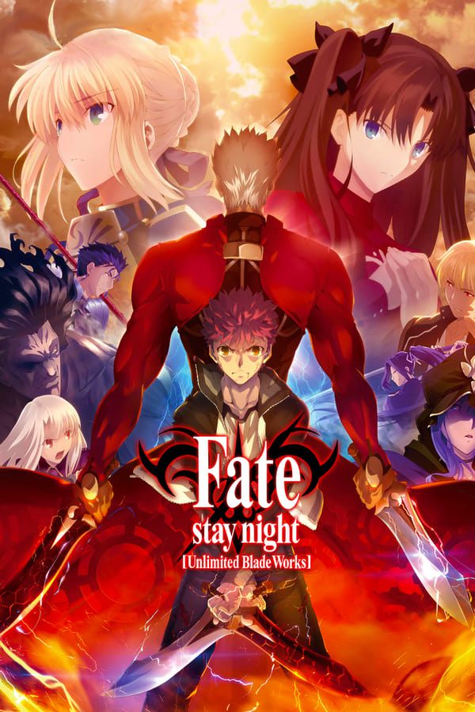
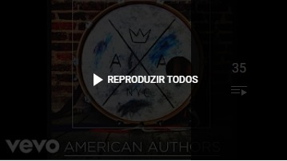
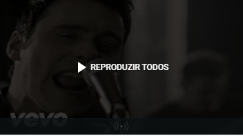

Olá, eu sou o Selton!
Desenvolvedor, Gamer e Analista de Sistemas.
Selton Souza
anos
Desenvolvedor Front-End
Olá, eu me chamo Selton Souza. Quando eu era mais novo, eu amava jogar games no meu
Playstation
e por
isso eu me interessei por jogos de diferentes plataformas e gêneros, eu queria entender como os mesmos eram
criados e por
isso eu comecei a pesquisar sobre o assunto no notebook do meu tio em 2011, porém o meu primeiro contato com
um
computador
tenha sido em 2009 nas extintas Lanhouse’s. Eu sempre fui curioso para as tecnologias inovadoras que estavam
aparecendo nos
anos 2000 e por isso eu comecei a me apaixonar por computares e tudo o que os tange (Hardwares e Softwares).
Aprendi a dar manutenção em micros e a reparar erros dentro dos diferentes Sistemas Operacionais (SO), e
com o
andar do tempo
me interessei por Design Gráfico, pois queria criar a interface dos meus games do futuro, entretanto, eu
percebi
que eu teria que aprender a programar para dar vida aos games.
Comecei por HTML e CSS, e agora estou melhorando o meu Javascript e o meu BACK-END com PHP. Decidi
montar esse
site como forma
de tornar o meu conhecimento palpável, encontrei várias dificuldades e sinto que as mesmas me ajudaram a
evoluir.
Estou cursando
Análise e Desenvolvimento de Sistemas e estou no segundo semestre, onde eu já aprendi muitas coisas como:
lógica
de programação,
estrutura de dados e algoritmos, modelagem de banco de dados, engenharia de software, engenharia de
requisitos,
modelagem de
sistemas, linguagem UML, metodologias ágeis e etc.
Meus hobbies são: Programar, Ouvir diversos gêneros musicais(mas adoro o bom e velho rock), Jogar em
diferentes
plataformas e
diferentes jogos(aliás se jogarem lolzinho, eu estou criando um canal no youtube para isso, o ícone está no
rodapé), jogar
basquete e futebol, e nas horas vagas estudar história e um pouco de filosofia.
Alguns dos meus animes favoritos: Naruto, Code Geass e Fate Stay Night.
 

Três animes que mudaram e moldaram o meu pensamento e jeito de agir, o primeiro é o tão aclamado Naruto Clássico que provavelmente é do conhecimento de todos, porém veja essa obra clássica e cheia de ensinamentos de vida.
O segundo Code Geass, é uma obra de ficção que retrata o imperialismo e como funciona o mecanismo da geópolitica de uma maneira tão complexa que o faz até deixar de parecer um mecha. Brindeiras a parte, assitam.
Por último, Fate Stay night conta a história de Shirou Emiya que sem saber envolveu-se em uma guerra santa em busca do santo graal, guerra ao qual participa 7 magos e o último sobrevivente irá se apoderarar do poder mítico do graal que concede um desejo ao mago e seu servo.
Se eu fosse indicar uma playlist underground para alguém?
PLAYLIST FIFA 14
PLAYLIST ROCK ALTERNATIVO
Para saber mais sobre minhas skills como DEV, check na aba "Projetos" no navegador do site. :)